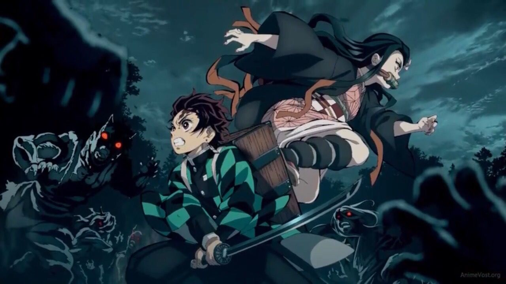

Аниме́ — японская анимация.
В отличие от мультфильмов других стран,
предназначенных в основном для просмотра детьми,
бо́льшая часть выпускаемого аниме рассчитана на подростковую и взрослую аудитории,
и во многом за счёт этого имеет высокую популярность в мире.
Актуальное аниме

Новая информация об аниме
В Колпинский районный суд Санкт-Петербурга принял пять административных исков с требованием запретить несколько аниме-сериалов,
среди которых культовые «Наруто» и «Тетрадь смерти». Внимание на аниме обратила прокуратура. Как считает ведомство, сериалы содержат информацию,
которую запрещено распространять на территории России, в частности, «жестокость, убийства и насилие».
Корреспондентка «Новой» разбирается в том, что силовикам не понравилось в японской мультипликации.
ТОКИО, 1 декабря 2020, 07:30 — REGNUM В сети появилась информация о третьем полнометражном фильме «Моя геройская академия»,
который будет снят на основе популярного манга и аниме-сериала.
Об этом 1 декабря сообщил портал Comicbook. Компания Shueisha подтвердила,
что премьера картины запланирована на лето 2021 года.
Стало также известно, что создатель манги Кохэй Хорикоси,
отказавшийся участвовать в проектах первых двух фильмов,
внесёт свой вклад в создание новых персонажей,
которые появятся в третьем.
Должность режиссёра вновь займёт Кенджи Нагасаки,
а сценарий напишет Ёсуке Курода.
За двенадцать лет до начала основных событий,
Девятихвостый атаковал Деревню Скрытого Листа,
уничтожив бóльшую часть деревни и унеся множество жизней.
Лидер деревни, Четвёртый Хокаге,
принёс себя в жертву,
чтобы запечатать Девятихвостого в новорождённом мальчике — Наруто Узумаки.
Осиротевшего, по причине нападения,
Наруто избегали жители деревни, которые из чувства страха и злости видели в нём самого Девятихвостого.
Несмотря на то, что Третий Хокаге запретил говорить обо всём,
что касалось Девятихвостого, дети ментально перенимали свою неприязнь от родителей,
и, тем самым, унаследовали враждебность по отношению к Наруто. Желая быть признанным,
Наруто поклялся однажды стать величайшим Хокаге, которого видела деревня.
Тетрадь смерти
Главный герой аниме,
Лайт Ягами, является лучшим школьником в Японии и сыном полицейского.
Однажды богу смерти по имени Рюк стало скучно,
он решил бросить одну из своих тетрадей смерти в мир людей.
По дороге из школы Лайт находит лежащую на земле тетрадь и решает проверить её работоспособность.
Восхождение героя щита
Наофуми Иватани, отаку и студент университета,
который проводит свои дни на играх и манге. Однажды он оказывается вызванным в параллельную вселенную.
Позже он узнаёт, что является одним из четырёх героев,
оснащенных легендарным оружием, которому поручено спасти мир от его предсказанного разрушения.
Присоединиться к нему никто не захотел, за исключением одной авантюристки.
В результате Наофуми был ею ограблен и обвинён в изнасиловании. Наофуми решил отомстить обидчикам,
встав на путь мести. Помогают ему в этом енотовидная девушка Рафталия и девочка-птица Фило — будущая королева филориалов,
которых он выкупил у работорговца.
Последний серафим
В 2012 году таинственный вирус убивает жителей Земли старше 13 лет.
Вместе с тем появляются и вампиры.
Они уводят оставшихся людей под землю и предоставляют им «защиту» в обмен на кровь.
Спустя четыре года после атаки вируса,
двенадцатилетний Юитиро и его названный брат Микаэла планируют бежать вместе с остальными детьми из приюта Хякуя.
Побег закончился неудачно: всех перебили, выбраться из-под земли смог только Юитиро.
Впоследствии выясняется, что вируса больше нет,
но земля осталась в руинах. В Японии властвует семья Хиираги,
а также подконтрольная ей Японская имперская армия демонов.
Главный герой решает стать воином и истребить вампиров.
Клинок, рассекающий демонов
С незапамятных времён земля японская полнится слухами о демонах-людоедах,
что скрываются в лесной чаще. В страхе перед ними обычные селяне предпочитают не покидать свои жилища после захода солнца.
Быть может, именно эти чувства и породили легенду об охотниках на демонов,
истребляющих нечисть по ночам. С тех пор,
как погиб его отец, Тандзиро в одиночку добывает хлеб для своей семьи — матери,
братьев и сестёр. Однако тяжёлые, но счастливые будни подходят к концу,
когда юноша находит близких зверски убитыми. Удаётся выжить лишь сестре Тандзиро,
Нэдзуко, обратившейся демоном.
Но девушка чуть не погибает от руки загадочного мечника — в последний миг тот останавливается,
поражённый взаимной верностью человека и демона.
Разглядев в Тандзиро потенциал охотника на демонов,
странник направляет его к своему наставнику,
дабы тот обучил юношу азам нового ремесла.
>
Мастера меча онлайн
Недалёкое будущее. К 2022 году технологии достигли такого уровня,
что сделали возможным Полное Погружение — блокировку информации,
поступающей к мозгу от всех пяти органов чувств, перехват сигналов,
идущих от мозга к телу и замена этих сигналов «фальшивыми» — сгенерированными компьютером.
Полное Погружение было в первую очередь использовано в индустрии компьютерных игр,
поскольку позволяло полностью переключить сознание игрока на виртуальный игровой мир.
Герои меча онлайн (SAO) стала первой выпущенной на рынок VRMMORPG — Массовая многопользовательская онлайн-игра c полным погружением.
Виртуальная игровая среда, разработанная компанией «Аргус»,
представляла собой колоссальную сто уровневую крепость Айнкрад,
парящую в небесах. Десять тысяч игроков, вошедших на сервер SAO,
внезапно обнаружили отсутствие кнопки «Выйти из системы» в системном меню.
Последовавшее позднее объявление от создателя технологии Полного Погружения игры
Герои меча онлайн Акихико Каябы превзошло самые худшие предположения —
пользователи были намеренно лишены возможности покинуть виртуальный мир до тех пор,
пока кем-нибудь из игроков не будет покорён сотый уровень Айнкрада.
Более того — попытка снять шлем виртуального погружения кем-нибудь в реальном мире,
приводит к мгновенной смерти в результате микроволнового разряда в мозг.
И самое худшее — смерть игрового персонажа в виртуальной среде приводит к самой настоящей смерти игрока в реальном мире.
Кадзуто "Кирито" Киригая, игрок-одиночка — один из тех,
кто участвовал в закрытом бета-тестировании игры Sword Art Online.
Будучи заядлым фанатом компьютерных игр, он оказался в числе десяти тысяч человек,
вошедших на сервер SAO в первый день игры и одним из тех, кто оказался в ловушке игрового мира.
Приняв решение участвовать в прохождении игры, Кирито, тем не менее,
остаётся одиночкой, лишь иногда присоединяясь к другим игрокам,
объединившимся в Гильдии — группы, поставившие перед собой цель пройти игру до самого конца.
Кирито является одним из игроков высокого уровня,
развивающим для своего персонажа искусство одноручного меча и,
как выясняется по мере развития событий, уникальный навык «Двух мечей».
У Кирито есть веские причины избегать близких связей с людьми —
исключение составляют только его отношения с первым заместителем главы гильдии "Рыцари Крови" — Асуной.